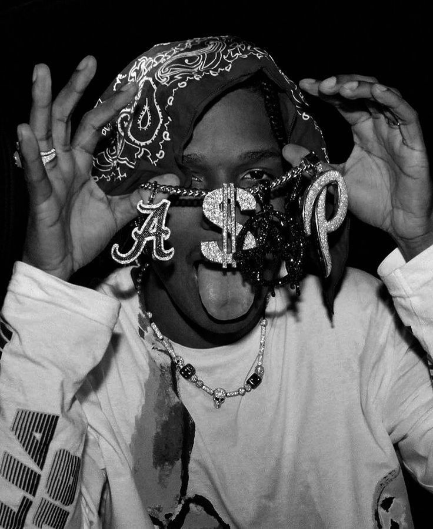

History's Blacks
All About Black History.
All About Black History.
Welcome to my Gallery. Photography is a passion to me and i hope that the following photos inspire in a way.


This website is dedicated to showcasing the beauty and diversity of black culture through photography. It features a collection of photographs that capture the essence of black history, culture, and identity. The website aims to celebrate the contributions of black individuals and communities while promoting a deeper understanding of their experiences and stories.
I am a passionate individual who has dedicated their life to capturing the beauty and diversity of black culture through their lens. With a keen eye for detail and a deep appreciation for the stories and experiences of black individuals, the photographer strives to create powerful and evocative images that celebrate the richness of black history and identity.